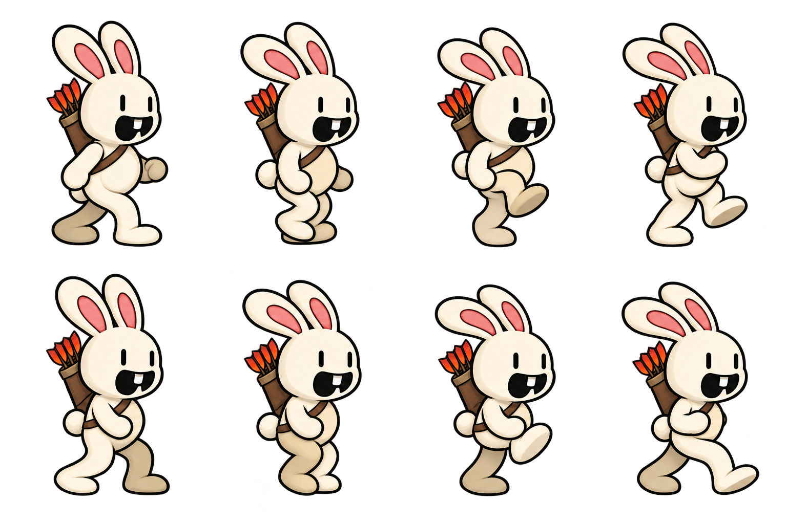
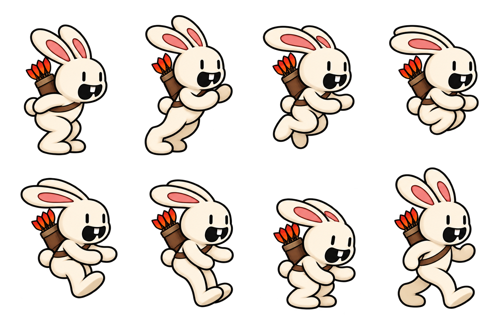
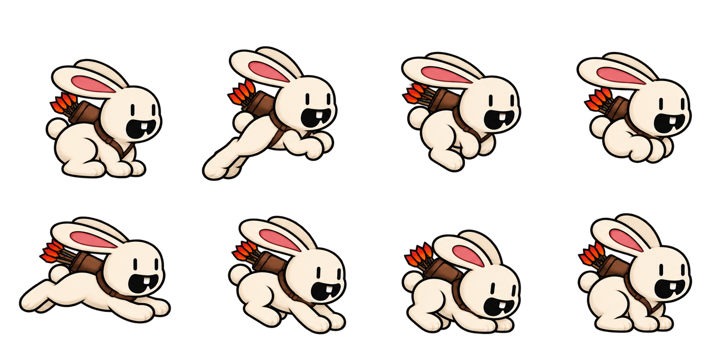

Complete painted poses · animation review before integration
Eight painted running poses, plus jumping
Every frame is a complete painted bunny, with smooth connected arms and legs, a quiver and gently flapping ears. The run alternates equally between the cream leg and the shaded leg. Each jump has eight paintings: crouch, push-off, rise, tuck, unfold, reach, land and recover.
Eight complete run paintings · four led by each leg · equal time per frame.
Loading paintings…
Loading the complete artwork…
All eight painted running poses
One, two, one, two. Inspect the complete paintings in their playback order.
Eight upright jump poses
Eight four-paw jump poses
See the original painted sheets
These are the saved complete paintings used by this preview.


